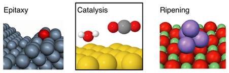
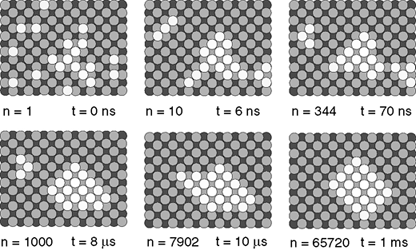

EON: Long timescale dynamics¶
The EON software package contains a set of algorithms used primarily to model the evolution of atomic scale systems over long time scales. Standard molecular dynamics algorithms, based upon solving Newton’s equations, are limited by the femtosecond time scale of atomic vibrations. EON simulations are designed for rare event systems where the interesting dynamics can be described by fast transition between stable states. In each algorithm, the residence time in the stable states is modeled with statistical mechanics, and the important state-to-state dynamics are modeled stochastically.
The algorithms currently implemented include parallel replica dynamics, hyperdyamics, adaptive kinetic Monte Carlo, and basin hopping.
Systems which can be modelled¶

The systems which are best modelled using EON are those in which the important kinetics are governed by rare events. Diffusion in solids and chemical reactions at surface are particularly suitable when there is a clear separation of time scales between atomic vibrations at the diffusion or catalytic events of interest.

In the example showing ripening dynamics on an Al(100) surface, a compact island forms after 65720 transitions in a time scale of a ms at 300K.
Interatomic Interactions¶
There are a variety of empirical potentials included with EON. You can also use the potentials built into the LAMMPS library. EON also provides an interace to the VASP and GPAW density functional theory codes.
Parallel Interfaces¶
The algorithms in EON can be run in parallel using a set of communication options including local communication, distribution over a cluster using a queueing system, multiple process multiple data MPI jobs, and distributed computing environments.
The EON team¶
The EON software is a collaboration between the Henkelman and Jónsson research groups. The primary developers are:
Henkelman Group (UT Austin)
Samuel Chill
Rye Terrell
Matthew Welborn
Liang Zhang
Jónsson Group (University of Iceland)
Andreas Pederson
Rohit Goswami
With contributions from a number of other developers:
Tobias Brink (TU Darmstadt)
Ian Johnson (UT)
Saif Kazim (UT)
Jean Claude Berthet (Iceland)
Raymond Smith (UT)
Erik Edelmann (Finland)
Jutta Rogal (Bochum)